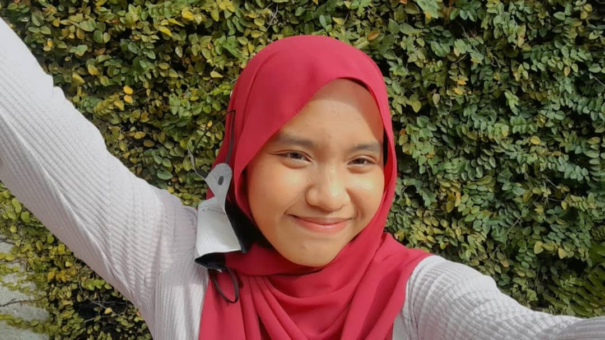
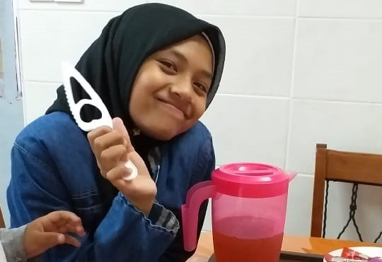
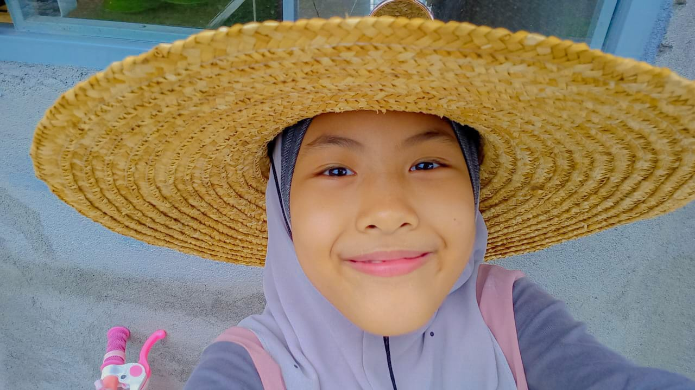

𝟙) 𝕄𝕐 𝔻𝔸𝔻

Name given was Muhrif bin Maharoff. He was born on 24th November 1974, at Seremban, Negeri Sembilan. By this year, 2023, he is currently 49 years old. He work as lecturer for life skills in electrician at IKTBN, Dusun Tua, Hulu Langat, Selangor.
He was the eldest son for his seven siblings. Therefore, during child, he need to do lots of things for the family living such as getting woods in forest, carry water from the river that are far from home,etc. since he was male. His hobby is do farming at village and as a result, there is many trees with a lot of fruit grew, such as banana, guava, rambutan, etc.
Hard work always pays off, whatever you do.” – Dustin Lynch.
His favourite food is salt fish. He even can eat it only with that and rice. He said salt fish reminds him of his childhood life as his family was poor and didnt have anthing except salt fish, but that already enough. He dislike spicy and sour food such as asam pedas, tomyam, etc.
𝟚) 𝕄𝕐 𝕄𝕆𝕄
This amazing woman, is my mom, name Saridah binti Mokhtar. She born on 16th December 1980, at Sungai Pelek, Sepang, Selangor. She currently 43 years old. Her age gap with my dad is 6 years old. She work as a clerk at Angkatan Koperasi Kebangasaan Malaysia (ANGKASA), Petaling Jaya, Selangor.

My mom have five siblings and she was the youngest. Even though, she was the youngest child, she is very independet woman. She can cook at a very young age and love to try cook something new and often cook for her family. Hence, I really do love dish from her. Her cook is always the best!
Another interesting facts about my mom is she can speak javanese. Her grandmother and grandfather is originally from Jawa, Indonesia. Not just only her family, but also the villagers at Sungai Pelek, Sepang, Selangor, is mostly their great great grandma and grandpa from Jawa, Indonesia and can speak javanese well, except, nowadays, not many youngers can speak javanese much, only they are understand some words.
𝟛) 𝕄𝕐 𝕊𝕀𝕊𝕋𝔼ℝ (𝕋ℍ𝔼 𝟚ℕ𝔻 𝔻𝔸𝕌𝔾ℍ𝕋𝔼ℝ)
This is my 2nd sister, Masyitah binti Muhrif. She is currently 19 years old now and work as teacher at Cahaya Iman, at Batu 9 Cheras, Selangor, while waiting UPU results. She born on 5th July 2004 at Kajang, Selangor. From my perspective, she is the most clever among of us (siblings) as she got an excellent grades and actives in Co-curriculom since she was child. She even managed to studied at Sekolah Agam Menengah, Batu 10, Cheras (SAM10), which only can studied at that school after get an official letter from Jabatan Agama Islam Selangor (JAIS). Hence, probably many people admire their older sister, but for me, I'm admire her.
Another unique about her is she loves to bake and every baking she make, is work and taste delicious. She able to bake cookies, cake, kuih raya, etc. I believe she can able to make a living even with her talent. Other than that, she loves to listen music, taking picture, and watch drama.
The capacity to learn is a gift; The ability to learn is a skill; The willingness to learn is a choice. — Brian Herbert
𝟜) 𝕄𝕐 𝕊𝕀𝕊𝕋𝔼ℝ (𝕋ℍ𝔼 𝟛ℝ𝔻 𝔻𝔸𝕌𝔾ℍ𝕋𝔼ℝ)
This girl is Nurul Najwa binti Muhrif, the 3rd sister of my siblings. She born on 12th August 2006 and born at same place of masyitah and I were born, at Kajang, Selangor. She still in high school and 17 years old, makes her will be sitting for SPM early month of next year. She and Masyitah are very smart in Mathematics.
She also very good in arts. She can draw very well especially anime character. I love to see her drawings. Her weakness is she not good much in Malay leterature. She said its hard for her to good on it. However, she didnt give up, instead, every night, she will study of the subject she weak, so she can do well in academic. As a sister, I'm proud of her.
𝟝) 𝕄𝕐 𝕊𝕀𝕊𝕋𝔼ℝ (𝕋ℍ𝔼 𝟜𝕋ℍ 𝔻𝔸𝕌𝔾ℍ𝕋𝔼ℝ)
Her name given is Umairah Sofia binti Muhrif. She is the youngest among all of us and age 10 years old. She still in primary school in standard 4. She born on 26th January 2012 at Bangi, Selangor. She loves to eat sweet foods, but, she know control herself in taking them. She is very cheerful and love cat so much, and even buy toys for cats. I love to see her enjoy and have a delight time. As long she is happy, I am happy as well.